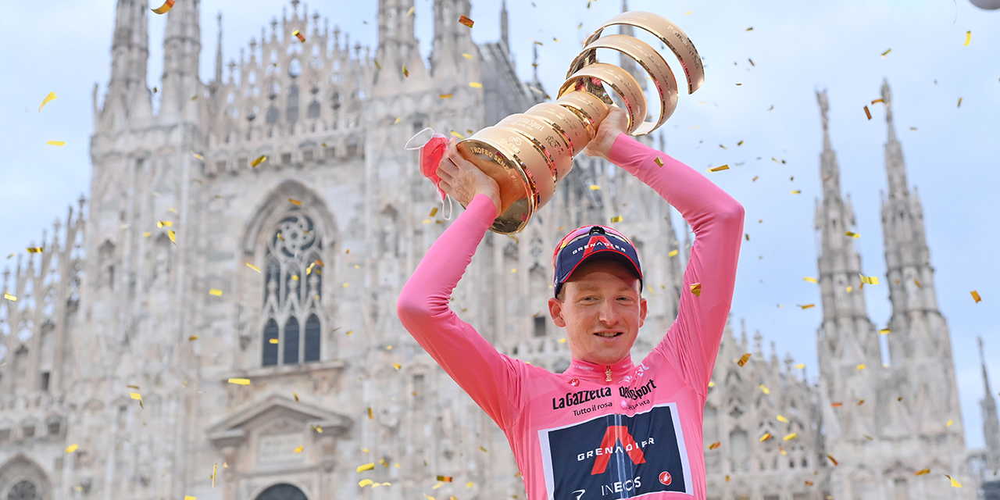
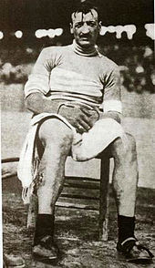

The Giro d'Italia (Italian pronunciation: [ˈdʒiːro diˈtaːlja]; English: Tour of Italy;[1] also known as the Giro)[2] is an annual multiple-stage bicycle race primarily held in Italy, while also starting in, or passing through, other countries.[3] The first race was organized in 1909 to increase sales of the newspaper La Gazzetta dello Sport;[3][4] and is still run by a subsidiary of that paper's owner.[5][6] The race has been held annually since its first edition in 1909, except during the two world wars.[3] As the Giro gained prominence and popularity the race was lengthened, and the peloton expanded from primarily Italian participation to riders from all over the world. The Giro is a UCI World Tour event, which means that the teams that compete in the race are mostly UCI WorldTeams, with some additional teams invited as 'wild cards'.[7][8]
Along with the Tour de France and Vuelta a España, the Giro is one of cycling's prestigious three-week-long Grand Tours.[3][9] The Giro is usually held during May, sometimes continuing into early June.[3] While the route changes each year, the format of the race stays the same, with at least two time trials, and a passage through the mountains of the Alps, including the Dolomites. Like the other Grand Tours, the modern editions of the Giro d'Italia normally consist of 21 stages over a 23 or 24-day period that includes two or three rest days.[3]
The rider with the lowest aggregate time is the leader of the general classification and wears the pink jersey. While the general classification gathers the most attention, stages wins are prestigious of themselves, and there are other contests held within the Giro: the points classification, the mountains classification for the climbers, young rider classification for the riders under the age of 25, and the team classification.[10]
The idea of the holding a bicycle race that navigated around Italy was first suggested when La Gazzetta dello Sport editor Tullo Morgagni sent a telegram to both the paper's owner, Emilio Costamagna, and cycling editor, Armando Cougnet, stating the need for an Italian tour.[11][12] At the time La Gazzetta's rival, Corriere della Sera was planning on holding a bicycle race of its own, after the success they had gained from holding an automobile race.[11][12][13] Morgagni then decided to try and hold their race before Corriere della Sera could hold theirs, but La Gazzetta lacked the money.[12] However, after the success La Gazzetta had with creating the Giro di Lombardia and Milan–San Remo, the owner Costamagna decided to go through with the idea.[12][14] Their bike race was announced on 7 August 1908 in the first page of that day's edition of La Gazzetta dello Sport.[13] The race was to be held in May of 1909.[13] The idea of the race was inspired by the Tour de France and the success that L'Auto had gained from it.[4][14]
Since the organizers lacked the funds, 25,000 lire,[11] needed to hold the race, they consulted Primo Bongrani, an accountant at the bank Cassa di Risparmio and friend of the three organizers. Bongrani proceeded to go around Italy asking for donations to help hold the race.[12] Bongrani's efforts were largely successful, he had procured enough money to cover the operating costs.[12] The money that was to be given out as prizes came from a casino in San Remo after Francesco Sghirla, a former Gazzetta employee, encouraged it to contribute to the race.[11][12] Even Corriere, La Gazzetta's rival, gave 3,000 lire to the race's fund.[11]
